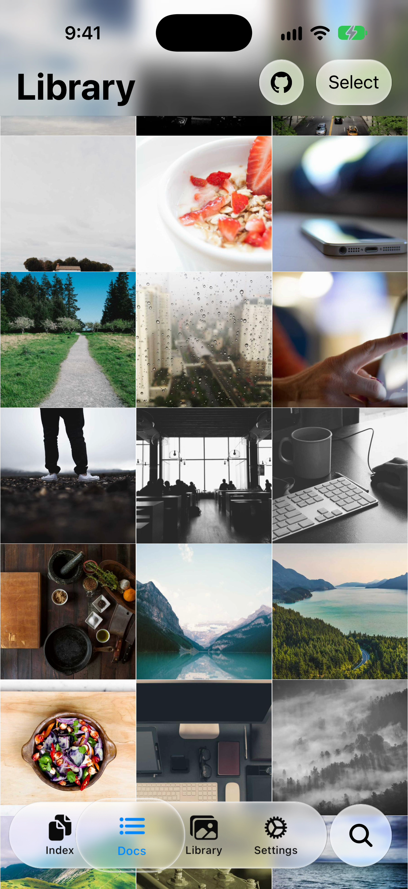
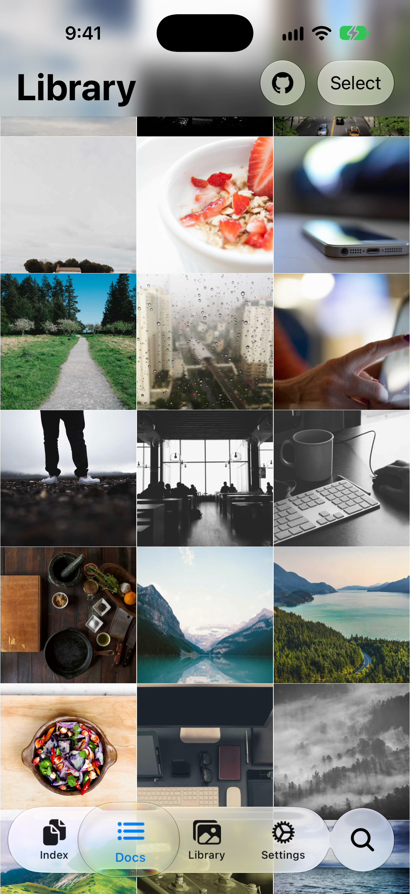

Tab drag: Web UI and Native UI Shell
The same Ionic Library screen on an iPhone 18 Pro simulator running iOS 27. Both frames were captured while dragging the selected tab toward Docs.
Native UI Shell off
Web glass
Tab bar, enlarged
The Ionic tab bar and its selection effect are rendered in the WebView.
Native UI Shell on
UIKit glass
Tab bar, enlarged
The same Ionic labels, icons, and selection are projected into UITabBar with the system's Liquid Glass material.
Capture method: same iOS 27 simulator, seeded gallery images, and XCTest press-and-drag coordinates. Only Native UI Shell startup
differed. The native run verified that UIKit's UITabBar was present.